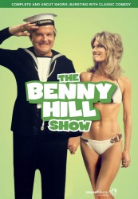
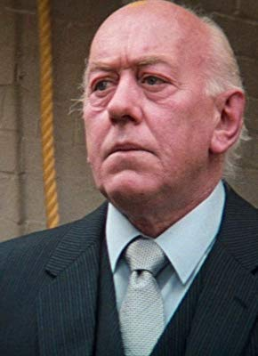

 
 IMDB-Wertung: 7.6 / 10
IMDB-Wertung: 7.6 / 10  Metascore: 0
Metascore: 0 
The Benny Hill Show was an English sketch comedy show, starring the man himself, Benny Hill. The show is famous for its perverted comedy, and its theme song "Yakety Sax."
Jahr: 1969
Dauer: 30 Minuten
FSK:
Land: England Studio: A&E Home VideoTonspuren:
Untertitel:
Auflösung: SD (688x496) Größe: 128000 MB
Genre: Komödie, TV-Serie
Regisseur: Dennis Kirkland, John Robins, Mark Stuart, Keith Beckett, Ronald Fouracre, David Bell, Peter Frazer-Jones, Benny Hill
Drehbuch: Jacques Durand
Soundtrack:
Darsteller:
- Benny Hill als Himself - Host
- Louise English als Herself
- Cheryl Gilham als Various Roles
 Jane Leeves als Hill's Angel
Jane Leeves als Hill's Angel- John Quayle als Various Roles
 Albert Moses als Apu Dhurani
Albert Moses als Apu Dhurani- Paul Eddington als Himself
- Zienia Merton als Mrs. Chow Mein
- Andrea Allan als Various Roles
- Laurie Goode als Hippie
 David Prowse als Muscleman in 'Ye Olde Wishing Well' Sketch
David Prowse als Muscleman in 'Ye Olde Wishing Well' Sketch- Bogdan Kominowski als Dolly Fins Singer
- Henry McGee als Himself
- Jackie Wright als Himself
-  Bob Todd als Himself
- The Ladybirds als Vocal Backing
- Sue Upton als Various Roles
- Jon Jon Keefe als Himself
- Hill's Angels als Themselves - Dance Ensemble
- Jenny Lee Wright als Various Roles
- Ken Sedd als Various Roles
- Bella Emberg als Various Roles
- Lorraine Doyle als Various Roles
- Nicholas Parsons als Announcer
- Lee Gibson als Various Roles
- Cyril Cross als Various Roles
- Len Keyes als Various Roles
- Samantha Spencer-Lane als Hill's Angel
- Abigail Higgins als Various Roles
- Anna Dawson als Various Roles
- Roger Finch als Various Roles
- Eddie Buchanan als Himself
- Lesley Goldie als Herself
- Jennifer Westbrook als Various Roles
- Connie Georges als Various Roles
- Rita Webb als Various Roles
- Sue Bond als Various Roles
- Alison Bell als Hill's Angel
- Jade Westbrook als Hill's Little Angel
- Jerold Wells als Various Roles
- Erica Lynley als Hill's Angel
- Walter Goodman als Various Roles
- Emma Bryant als Hill's Angel
- Helen Horton als Various Roles
- Jim Tyson als Various Roles
- Clare Smalley als Hill's Angel
- Mike Mulloy als Various Roles
- Diana Darvey als Herself
- Pat Ashton als Various Roles
- Bettine Le Beau als Various Roles
Datei: X:\Dokumentationen\Comedy\Benny Hill Show\Die Benny Hill Show E01.avi seit 24.01.2017
Festplatte: HD Serien(SU-Z)+Dokus+Musik
 Es gibt insgesamt 30 Filme in der Gruppe 'Dokumentationen\Comedy'
Es gibt insgesamt 30 Filme in der Gruppe 'Dokumentationen\Comedy'
")